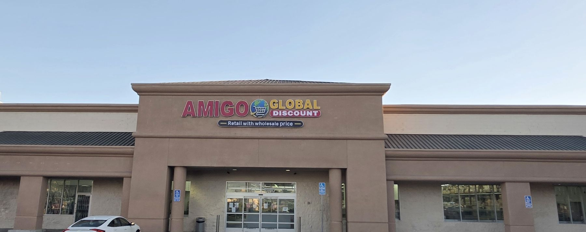

Pick
Choose a stock update, the right customers and a simple goal.
A local Sacramento marketing team.
We built this audit for Amigo Global Discount.
Reach nearby people on Facebook and Instagram.
Real videos, photos and clear messages.
Get found through your Google Business Profile, site and blogs.
Real store photos, easy-to-browse departments and clear directions already help people picture the trip.
We looked at your site and public listings as a shopper deciding whether to visit.

On October 20, the stock page still described a September snapshot.
Shoppers may delay the trip if they cannot tell what is still there.
We’d add dated arrivals, product clips and a simple way for staff to remove sold items.
The homepage promotes weekly arrivals, but has no signup for stock updates.
On that page, shoppers have no clear way to hear about the next arrival.
We’d add optional stock alerts and send short updates with a store link.
An owner reply on Google describes a change in store format.
New visitors may be unsure what the store offers today.
We’d refresh Google photos, explain the current format and keep its details in line with the website.
Choose a stock update, the right customers and a simple goal.
Film new finds, refresh the stock page and improve the Google listing.
Test local ads and track calls, directions and shop enquiries.
Let’s pick one new item to film and one page to improve.